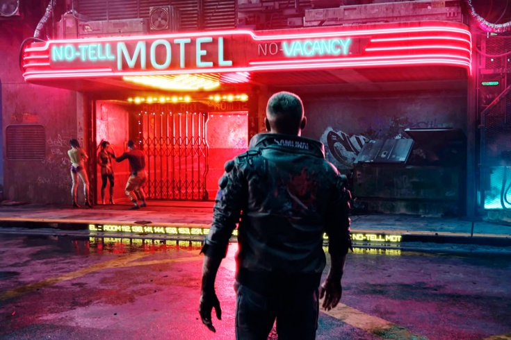
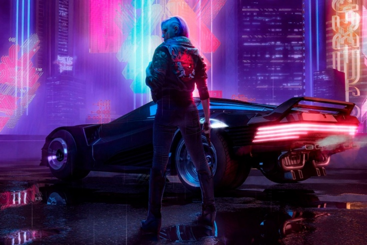
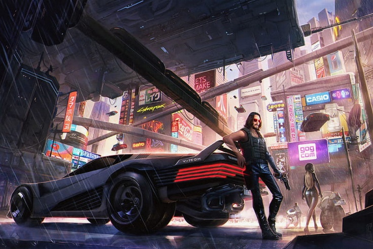

Description
|
Cyberpunk 2077 основана на настольной игре Майка Пондсмита Cyberpunk 2020. Основные элементы взяты из редакции «2020», но события игры будут развиваться в более позднем будущем, в 2077 году. Однако игра расскажет о событиях, предшествующих ей. Сам Пондсмит активно участвует в разработке 2077, давая советы по механике предстоящей игры. Важным является то, что игрок сможет создать собственного персонажа и выбрать его класс, а не будет играть за заранее заданного героя, как в «Ведьмаке». При этом разработчики хотят сохранить значимость сюжета, вплетая в историю созданного персонажа элементы его вымышленной биографии. Описывая сюжет настольной игры Пондсмита, Адам Бадовский, руководитель студии, сказал, что его игры являются противостоянием сильных персонажей против превосходящих их числом противников, в качестве которых могли выступить корпорации, банды или другие группировки. Подобным образом CD Projekt RED хочет подойти и к своей игре, сосредоточившись на историях персонажей, а не на войне корпораций, как в других крупных киберпанк-играх, например, Deus Ex. Событие игры будет происходить в Найт-Сити (англ. Night City) — огромном городе, находящемся где-то между Лос-Анджелесом и Сан-Франциско, построенным его основателем Найтом. Улицы города описываются мрачными и дождливыми как в фильме «Бегущий по лезвию». Cyberpunk 2077 создаётся по канонам «старого» киберпанка образца 1980-х годов. При разработке команда вдохновлялась книгами Уильяма Гибсона, в частности, «Нейромантом». CD Projekt RED желают показать киберпанк правдоподобно в среде простых людей, а не повествовать о сверхтехнологиях, использование которых могло бы разрушить мир игры, а это уже не та история, которую разработчики хотят рассказать. В 2077 будут отражены проблемы людей, связанные с новыми технологиями. Бадовский описал игру словами: «В общем, это будет взрослая история для взрослых игроков». Датой событий игры выбран 2077 год для того, чтобы освежить концепцию киберпанка и привнести в неё что-то новое, говорит Адам, но также добавил, что «7» — это счастливое число. |